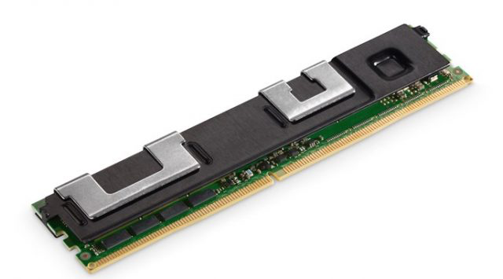
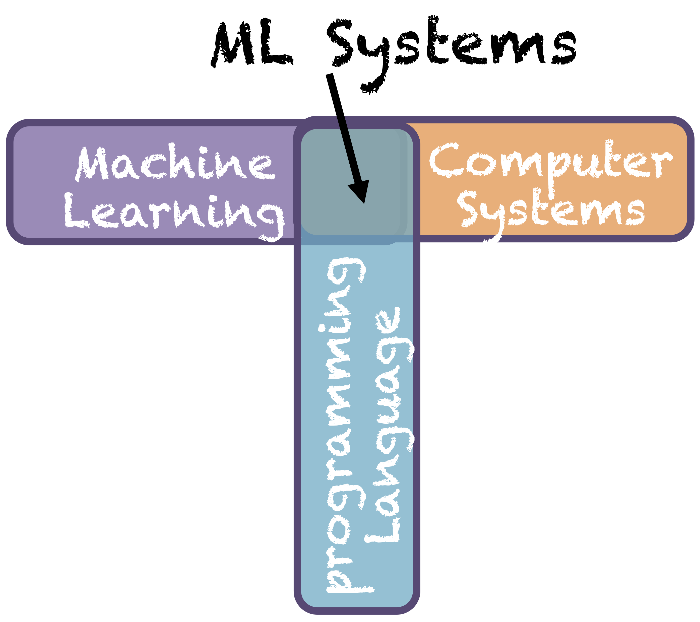

Our group explores a broad range of computer architecture and system topics that bridge system software and hardware design. Our recent research efforts can be categorized into the following themes:

Memory sysstems are becoming critcal bottlenecks of modern applications that store and process large volumes of data with a growingg demand for memory capacity, bandwidth, reliability, and securiry. Various new memory technologies and management techniques promise opportunities to tackle these challenges. However, such technical transition may fundamentally change current memory and storage system design assumptions and introduces critical design challenges. Our goal in this research is to enhance the performance, energy efficiency, reliability, and security of memory and storage systems ranging from data centers to end-user devices. Our approach includes fault tolerance support, near-data acceleration, efficient caching in system libraries and userspace, memory system profiling and characterization, load balancing techniques among critical system resources, and security vulnerability characterization and mitigation.
NVLeak COARSE, Ayudante, ICCV 2021, ISLPED 2021, LENS VANS, APSys 2020, Binary star, SSP, PM test, MICRO 2018, HotStorage 2018, HPCA 2018, DAC 2017, USENIX CoolDC 2016, MICRO 2015, MICRO 2014, MICRO 2013, WEED 2013

The organization of computer systems are becoming increasingly complex and heterogeneous in both software and hardware. Machine learning is demonstrated to outperform traditional heuristics in various aspects of advancing and optimizing computer system design, such as compilers, programming language, microarchitecture, and data center scheduling. On the other hand, machine learning has witnessed an increasing wave of large demand for computation and data storage resources with skyrocketing dataset and model sizes. In order to continue to scale computer systems and machine learning, new design approaches are needed. To embrace these challenges, we are exploring machine learning and systems co-design for programming language, compilers, and heterogeneous systems, such as neural programming translation, neural decompilation, neural architecture search in heterogeneous systems, and software/hardware co-design for deep learning acceleration.
OrcaLoca, MAGE, ACL 2024, WikiDT, Fasor, WasmRev, Sibyl, TripLe, ICML 2023, HyperGef, Q-gym, COARSE, LSTM vs. Transformer, Ayudante, LeTS, IEEE Micro MLSys 2020, ICLR 2020, ISCA 2019, NeurIPS 2019, MICRO 2018,
The combination of smart technology and edge computing has paved the way for us to embrace the technology movement of smart homes, autonomous driving vehicles, and long-term service robots. These smart applications introduce critical architecture and system design challenges. One key component in these smart applications is deep learning. The increasingly larger number of parameters and data sets impose substantial system bottlenecks in memory and storage capacity, bandwidth, and energy efficiency. To tackle such bottlenecks, we are exploring near-data processing to accelerate deep learning. Moreover, the mission-critical functions of many emerging edge infrastructures will require unparalleled reliability and fault tolerance guarantees. For example, certain applications, such as autonomous driving, require fast recovery when systems fail. We are investigating efficient system management and fault tolerance schemes suitable for smart applications.
ICRA 2024, ICRA 2023, Suraksha, FPRA, DAC 2020, ICCD 2020, IV 2020, ICRA 2019, MEMSYS 2018, TPDS 2018, MEMSYS 2016, ISCA 2016, DAC 2016
The volume of data has skyrocketed over the last decade, due to expanding working set sizes of modern applications. Unfortunately, memory capacity scaling falls far behind the pace of the application demand with current DDRx based architectures. One promising solution to tackle such challenges is memory networking, with memory systems consisted of multiple memory nodes interconnected by a high-speed network. The interconnected memory nodes form a disaggregated memory pool shared by processors from different CPU sockets in the server. Ideally, the memory network can enable more scalable performance and capacity than traditional memory systems.
HPCA 2019, TCAD 2018, MICRO 2016
Recently, accelerating general-purpose applications with GPU draws wide interests. In this project, we explore hardware design and hardware/software interface that continue to exploit the energy-efficiency of specialization while broadening the range of applicable applications. We have designed effective GPU architectures and data management techniques to optimize system energy efficiency and memory bandwidth, by exploiting the memory access patterns of general-purpose applications. Our on-going research investigates architectural support for (1) reducing the performance constraints posed by specialization (e.g., thread synchronization overheads of GPUs), (2) increasing the programmability of special-purpose accelerators, by developing software interfaces that can enable efficient mapping of generalpurpose applications to special-purpose hardware, without the need of reprogramming applications for each different type of accelerators.
TACO 2013, ICCAD 2012, ISLPED 2012
Cost is always an important factor that influence the adoption of new technologies. We analyze and model the cost of designing and fabricating circuits and systems developed by employing new technologies. With the comprehensive cost models, we intend to help hardware designers choose the most cost effective design strategy at the early stages of the design flow. Our cost analysis among various design options can demonstrate that by properly configuring processor organization, new technologies are able to reduce the fabrication cost compared to their traditional technology counterparts.
In the area of hybrid memory designs, our studies are concerned with helping architects determine the best system organization when multiple choices of memory technologies exist. In particular, we proposed a bandwidth-aware reconfigurable cache architecture design, consisting of a hybrid cache hierarchy, a reconfiguration mechanism, and a statistical prediction engine. Our design dynamically adapts the cache capacity of each level based on the predicted bandwidth demands of different applications. We also developed an analytical performance model that estimates the performance of a throughput computing working running on various memory hierarchy configurations.
3D integration technology allows us to integrate two or more dies of a chip multiprocessor (CMP) vertically. Compared to traditional 2D CMPs, 3D CMPs promise reduced circuit delay, high memory bandwidth, and condensed form factor. But the continuous increase of power and energy budgets for CMP designs potentially brings in critical system design problems, such as power supply rail design, system reliability, and thermal issue. We address the high energy consumption and thermal issues when 3D stacking technology is used in developing CMPs. We propose to reduce the energy consumption of 3D-stacked CMPs by both temporally and spatially finegrained tuning the supply voltage and frequency of of processor cores and caches. Our tuning technique is implemented by integrating an array of onchip voltage regulators into the original processor.